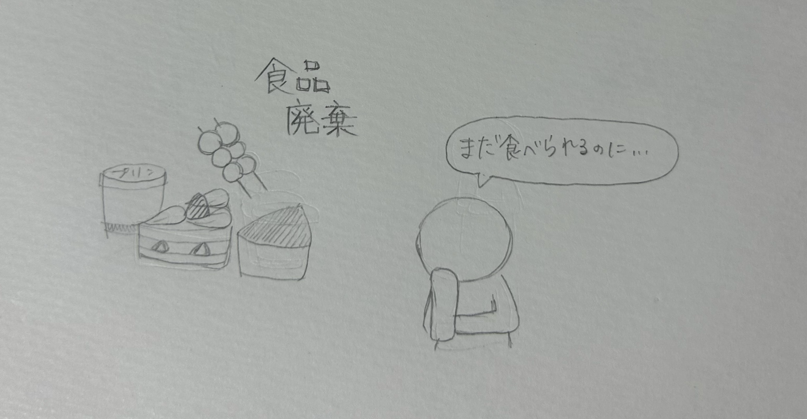
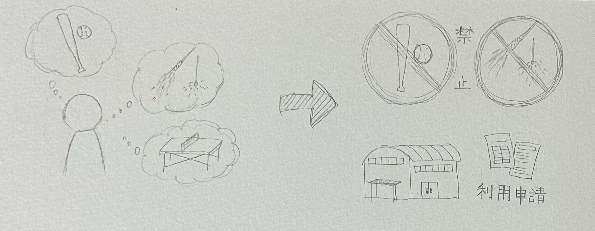

アイディアスケッチ
食品廃棄
アルバイトをしていて定期的に大量の食品が廃棄されることがあり勿体無いと感じた。
捨てるよりは無料で提供した方が良いと思うので、アプリなどを通して捨てられてしまう食品を無料提供できるサービス（抽選式）があれば良いなと思った。
（食品廃棄の無料提供だけに顧客が集中しないよう頻繁にお店を利用してくれている人ほど抽選に当たりやすい仕組みにする）
スポーツ複合施設
夏休み中、野球や花火、卓球をしたいなと思ったときに、公園や海岸では花火や野球、サッカーが禁止されていることが多いことを知った。
また、市の体育館やコートを使うのには手間のかかる申請が必要で、予約も取りづらいという難点があった。
スポーツアミューズメント施設を利用すると短時間で高い利用料もかかるため、コートやゴールなど大型のもの以外を持参型にしたら低価格で遊べるのではないかと考えた。
タイムカプセル

20歳を目前に友だちとタイムカプセルを埋めたことを思い出し、埋めた場所に掘りに行ったが見つからなかった。
ある程度の場所はわかっていたが、そこから小さな缶を掘り起こすのは中々無謀な挑戦であった。
ネットで調べて見てもタイムカプセルが見つからない例は多くあったので、タイムカプセルを埋める場所の提供や管理をしてくれるサービスがあったらいいなと思った。